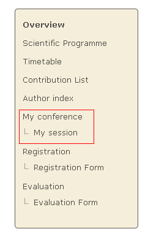

1. Session Co-ordinator’s Guide¶
1.1. Session Co-ordinator¶
The Session Co-ordinator is responsible for scheduling contributions and breaks within his session. These contributions need to be imported by the Session Manager or Conference Manager before you can add them to your session.
You are given this co-ordinator access by either the Session Manager or the Conference Manager. The Conference Manager sets the level of modification rights for all of the Session Co-ordinators. You can access your session by selecting My session from the conference menu.

1.2. Session Co-ordination¶
There are three levels of co-ordination modification that the Conference Manager can give to Session Co-ordinators, as we will see in the following sections.
If you do not have access or the rights to any part within your session you will be presented with this page:

1.2.1. Basic Rights¶
All Session Co-ordinators can:
- Manage the timetable with restrictions: it is allowed to add contributions, create breaks, reschedule contributions and breaks; but, for instance, it is not allowed to create new sessions, new intervals, etc.
- View contribution list (cannot modify contributions)
- View the sessions’ main information (cannot modify)
- View comments from the Conference Manager (cannot modify)
Your co-ordination will mainly take place within the Session timetable tab of your session:

1.2.2. Contribution Modification Rights¶
If the Conference Manager has allowed contribution modification rights you can:
- Modify the main data of the contribution.
- Set the access controls for the contribution, i.e., give submission rights to presenters or allow others to manage the contribution.
- Add/remove sub-contributions.
To modify the contribution click on its entry item from either the timetable or the contribution list.
The contribution management area (for a more detailed explanation please see Contributions in the Indico User Guide):

1.2.3. Unrestricted Timetable Management¶
If the Conference Manager has allowed you unrestricted timetable management rights you can:
- Add contributions and breaks, reschedule contributions and breaks as before
- Add, Edit and Delete session intervals
The timetable management area will be the same as with the basic rights with the options to manage the intervals: